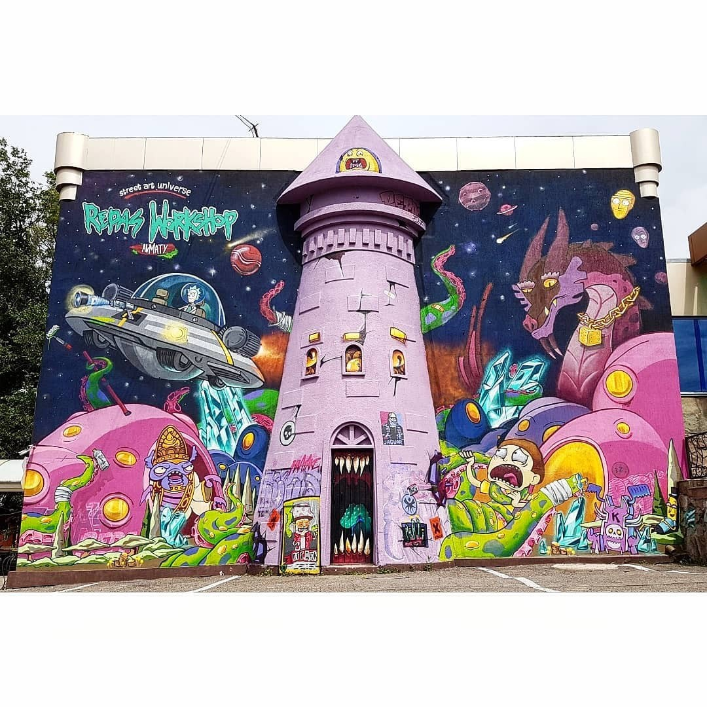
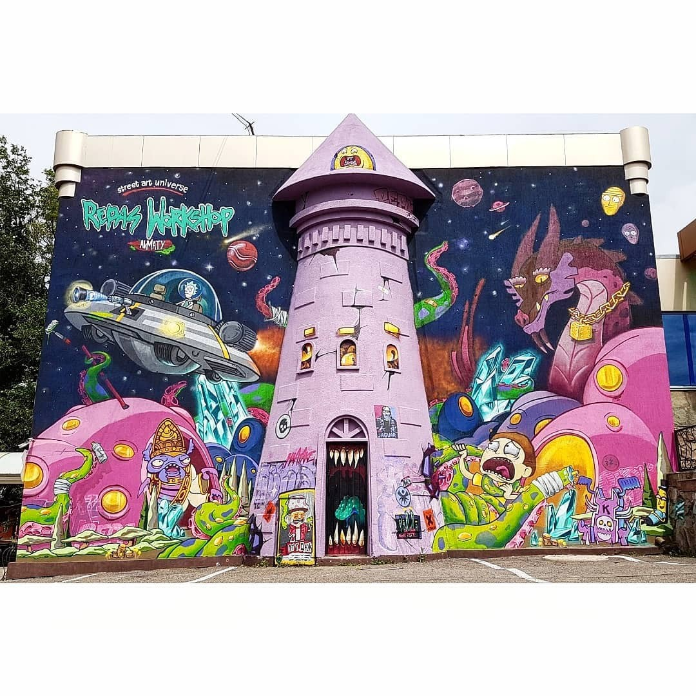

Как стрит-арт меняет пространство и сознание
Интервью с Гафурой Каирбековой
Меня зовут Гафура Каирбекова (@gafura_art), я художник, стрит-артист, монументалист, а также исследователь стрит-культуры и немного мировой культуры.
Ну, во-первых, у меня есть первое образование — это швейное образование. Я модельер-конструктор, участвовала в постановках театральных, балетных, мюзиклов. И, в целом, деятельность там связана не только с костюмами, но ещё и с оформлением сцены. Эта тема мне больше понравилась. В процессе работы в кино я решила, что хочу дальше в художестве и продолжать.
На этапе работы нашей киностудии с академией Жургенова я завела знакомства среди преподавателей, и они порекомендовали мне поступить туда, в Жургенова. На монументальное, потому что станковое в плане инструментария немного ограничено. А монументальное может экспериментировать: вы можете взять любой материал — мозаику, витраж, цемент, фактурную стену; можно рисовать акварелью по сырой штукатурке.
То есть разные способы реализации каких-нибудь декоративных панно, всего, что касается оформления здания и городской среды. И, по сути, монументальное искусство — это первоначальные муралы, которые делались в период советского времени. Причём это были обязательно такие проекты, которые взаимодействовали с архитектурой, сразу с архитектурным бюро, городским управлением. Оно уже изначально имело свою среду. Вот сейчас самым ярким примером монументального искусства являются муралы. Это, в принципе, монументальные росписи. Большинство из них можно считать паблик-артом, стрит-артом. Граффити, например, — это вообще отдельная культура. Это даже не монументальное искусство, а скорее отдельное направление. В общем, эта вся среда меня затянула.
В принципе, я думаю, что очень важную роль сыграли художники, с которыми я училась. Сейчас есть такая команда "Tigrahaud crew". Может быть, видели: дети рисуют на домах в Астане, потом они делали в Петропавловске, а здесь, в Алматы, есть у нас в микрорайонах, где детишки рисуют на огромных домах такие яркие, классные изображения мелом.У них очень сильная художественная школа, и плюс они ученики Дюйсембаева. Это художник с очень эмоциональной, пастозной живописью. Пастозная — это когда мазок грубый, поверхность шероховатая, всё такое нагромождённое. В музее Кастеева есть его работы, если будет интересно — сходите, посмотрите. Получается, это Ержан Танаев и Альзакир — вот эти ребята. Они начали участвовать в конкурсах по граффити. На момент нашей учёбы я видела, как они в рамках академии Жургенова делали небольшие куски. Это называется кусками, то есть это холсты, или можно писать на картоне, фанере. "Кусок" — это, в принципе, твоё произведение, только по-уличному. И вот они как раз это делали. Когда я увидела, я подумала: "Блин, как классно!" Баллончиками всё-таки по-другому. Для меня это был новый материал. Но пока я училась, я просто наблюдала.
И ещё мой преподаватель Бапанов Алибай Калтаевич — один из ярких современных художников Казахстана. Он представляет contemporary-искусство, современное монументальное искусство и занимается гобеленами. У него и супруга занимается гобеленами, а дочка — дизайнер. Это настоящая творческая династия. Он внёс огромный вклад в моё творчество, научив меня основам композиции и смелым решениям. Помимо этого, он постоянно обновляет свои знания, участвует в биеннале и в общем он такой «всегда волне». Сейчас как скажу такую вещь, его можно назвать "нашим казахстанским Дали". Его искусство — идентичное, современное, наполненное традициями, и, что важно, оно продаётся. Существует такое понятие, что искусство должно быть одновременно актуальным и монетизированным. Бапанов прекрасно понимал это и объяснял нам эти принципы. Кому-то из студентов это зашло, кому-то нет.
Ну ещё я начала интересоваться и просто вот благодаря социальным сетям узнавать разных художников. Первый художник, на которого я наткнулась, был Кобра — Эдуардо Кобра, бразильский художник. Его полотна вообще завирусились в интернете. Они состоят из ярких, перекликающихся квадратиков, и это всегда реалистичные портреты. Например, он рисовал Майю Плисецкую то ли в Питере, то ли в Москве. Так начался мой путь в искусстве.
В целом, это коммерческое искусство, определённо. Оно может быть ремесленничеством, может быть рекламным, но это тоже искусство. Монументальное искусство объединяет в себе множество форм. Подобные заказы, в принципе, увеличивают потребность в художниках, монументалистах, муралистах. Такие проекты позволяют художникам экспериментировать, пробовать новые идеи и находить заказчиков. Конечно, многое зависит от куратора и его подхода к проекту. Если проект курируется творчески, даётся определённая свобода действий, то такие "проплаченные" работы могут быть действительно интересными и вдохновляющими.
Это стрит-арт. Все можно назвать стрит-артом в данный момент. Или паблик-артом. Это такой термин пограничный, совмещающий в себе и рекламу, и творчество. То, что "проплачено" акиматом, иногда бывает очень удачным. Вот, например, здесь есть мурал, вот прям по диагонали на доме, и с другой стороны тоже. И этот мурал "проплачен" акиматом, а с той стороны проплачен фондом «Дети рисуют мир». Главное, что получается успешно, когда находят хорошего куратора и дают ему свободу действий.
Я думаю, что первые, кто навёл акимат на такие идеи, были Слудские. Слудский Игорь — это человек, который активно продвигает contemporary-культуру в Казахстане. Большинство его проектов, таких как Арбатфест, стали успешными. Сейчас его сын Владислав курирует многие из таких инициатив. С 2012 года у нас начал проходить Арбатфест. Это был момент, когда искусство вынесли в массы. Я помню, что был такой период, когда зарождалось авангардное искусство Казахстана. Тогда у них был проект под названием "Парад галерей". Этот проект был внедрён в музей Кастеева. Среди классической станковой живописи начали появляться работы современных художников. Сейчас многие из тех, кто участвовал, стали мастерами и известными contemporary-художниками.В тот период возникла потребность добавить в это движение ещё и уличное искусство. Арбатфест стал первым толчком для того, чтобы представить казахстанской публике муралы и стрит-арт в целом. Позже акимат начал брать инициативу в свои руки, основываясь на этом опыте. Конечно, в таких проектах есть свои подводные камни, но я не буду сейчас на этом заострять внимание.
Несколько лет подряд акимат проводил фестивали, на которые приглашались художники из других стран. Это стал международный фестиваль. У нас работали художники из Англии, Мексики, Малайзии, Голландии, России, Украины, Белоруссии, Франции — практически из всего мира. Художники приезжали, создавали муралы на свои темы, при этом обязательно взаимодействовали с нашей культурой и городскими особенностями.
"В Алматы создано достаточно много муралов, более 120 произведений. Некоторые из них уже закрашены, а некоторые до сих пор остаются на своих местах.Буквально вчера я увидела, что закрасили произведение российского художника Потапова. Это была юрта, изображённая на зипке. Она находилась в районе Саина по мосту, на Толе би. Очень жаль, потому что это была великолепная работа."
Благодаря фестивалям, "проплаченным" акиматом, в городе появилось так много произведений. Раньше было модно приглашать иностранных художников, на них приходила публика. Думаю, ставка была сделана именно на это. Сейчас, наоборот, вектор сместился на развитие своих художников. Делается акцент на привлечение местных мастеров. Однако случаются и курьёзные ситуации, когда, например, привлекают местных художников для участия в проекте, но затем говорят, что нет финансирования, и проект отменяют. А потом используют эскизы этих художников, но работу выполняют другими руками и за другую стоимость
Такой случай был с муралом Бауыржана Момышулы, который нанесён в районе Атлетической деревни, возле Алматы-Арены. Его создал Батыр, художник, который также рисовал Димаша — возможно, видели этот мурал на улице Кабанбай-Батыра. Сейчас ситуация немного изменилась к лучшему: жители начинают отстаивать право муралов на своих домах. Бывают случаи, когда муралы закрашивают из-за реставрации. но затем их возвращают по просьбе горожан.
Я помню кейс с муралом, который перекрыла Кока-Кола. Это произошло, когда я поступила на первый курс. Тогда этот случай активно обсуждался, люди отстаивали права мурала, и у Кока-Колы возникли серьёзные проблемы с репутацией.
Больших проблем на самом деле не было. Муралы — это эфемерное искусство, оно сегодня есть, а завтра его может не быть, и это нормально. Вопрос в том, кто заказывал мурал. Фестивальная деятельность предполагает, что художник получает небольшой гонорар, но его тепло встречают, предоставляют условия для работы, делают звездой мероприятия. Мурал становится важным событием для города — это эмоции, история, память. Когда такие произведения закрашиваются, за них действительно стоит постоять.
Был случай, когда фестиваль пригласил художника из Сербии. Его звали Аrtez (@artez_online). Он — известный художник, с уникальным стилем, настоящий инфлюенсер. Его работа на Аль-Фараби была одной из моих любимых. Это был тюрк на велосипеде в штанах, похожих на те, что у Айвазовского — расшитых орнаментом, который выглядел пограничным, не совсем казахским, а именно тюркским. У него было мечтательное и серьёзное лицо.
Этот мурал занимал две стены на двух домах в районе Аль-Фараби и Ленина. Качество работы было невероятным, и я успела сделать много фотографий. Это был один из моих любимейших муралов. Просто потому, что он якобы там, мужицам не нравился. Хотя это история. То есть перед этим самим художником неудобно, потому что он, по-моему, просуществовал всего пару лет. У таких произведений обычно срок жизни — от 5 до 20 лет, пока сохраняется покрытие.
С другой стороны, это и есть жизнь стрит-арта. Граффити — это что-то стихийное, дикое. Ты оставляешь свой месседж: "Здесь был я", и всё.
"Граффити-художники придумывают себе тег, никнейм и стиль. Если у тебя нет стиля, то твой тег ничего не стоит. Ты должен либо взять уже существующий стиль, либо придумать что-то своё. Стили граффити очень разнообразны: есть, например, wild style, bubble style. Если стиль не продуман, в нём не хватает эстетики, то это, как говорят художники, "жуть" или "высер". Но у тегов всё же есть своя ценность."
Была история в эпоху зарождения граффити в Бруклине или Нью-Йорке. Это, можно сказать, альма-матер, откуда граффити, в принципе, и появилось. Всё началось с бруклинского метро и кварталов гетто. В те времена граффити было меткой, обозначающей территорию. Это была необходимость для выживания в гетто: такие метки показывали, что территория принадлежит определённым людям, и если ты зайдёшь на неё, тебя могли либо застрелить, либо причинить другой вред.
Со временем эти метки перестали быть исключительно территориальными и начали "бомбить" всё подряд. Районы гетто стали буквально испещрены этими надписями. Однако это создавало сильный визуальный шум, который делал город грязным и непривлекательным.
Внутри нашего города граффити изначально воспринималось как нечто инородное. Это был вандализм, порча стен, особенно на исторических зданиях. Например, на таких объектах, как гостиница "Казахстан" или другие памятники советской архитектуры, граффити не совсем уместно. Однако граффити-культура связана с ажиотажем, с риском. Это своего рода протест: прийти, оставить свою метку, потревожить мирную жизнь города, выразить своё отчаяние через персонажа, показать себя, своё имя.
У граффити-художников также есть претензии к молодым начинающим. Например, они критикуют тех, кто портит то, что не нужно. Если хочешь что-то сделать, сделай это с кайфом: посмотри на город, на окружение, на обстановку. Смотрится ли граффити хорошо на этом месте? Если нет, то лучше не делать. Вот, например, на одном из исторических зданий есть тег с цифрами, что-то вроде "42" или "29". Сам тег сделан неплохо, но он не совсем вписывается в архитектуру. Однако он находится высоко, поэтому его никто не закрашивает, и к нему уже привыкли.
Есть и такие граффити, которые выглядят очень симпатично. Например, "носорожки" — персонажи, которые в одних местах смотрятся хорошо, а в других — нет. Всё зависит от того, как работа взаимодействует с окружающим пространством.
Узнайте больше о культуре стрит-арта через это короткое видео. Оно расскажет об истории, эмоциях и идеях, которые скрываются за каждым шедевром.
Кстати, знаете, я когда была в Батуми, меня очень впечатлила их архитектура. Она сочетает что-то из модерна, что-то новое, и при этом есть старые здания — очень красивые. Многие из них разрисованы граффити. Грузия вообще считается второй столицей граффити после Тель-Авива, города в Израиле.
Один товарищ, с которым я недавно познакомилась, работает экскурсоводом по граффити. Он релакант, какое-то время жил здесь, в Алматы, но ему не сильно понравилось, потому что, здесь граффити мало. Всё-таки наша граффити-культура пока только развивается. Не в зачатке, но ещё на пути к полноценному становлению. А в Грузии всё по-другому: она вся исписана, особенно старый город.
Там есть дома, которые подпёрты деревянными конструкциями-шпалами, и их даже правительство запрещает трогать. Чтобы, например, заменить лампочку на деревянном балкончике, нужно пройти семь кругов ада, собрать кучу бумаг, или тебя оштрафуют. Реставрация таких зданий очень сложная, из-за чего город, по сути, больше предоставлен туристам. Мало кто живёт в этих домах, многие используются под хостелы или подобное. Естественно, в таких условиях появляется свобода творчества — рисуй, что хочешь.
В самом Тбилиси есть интересное место — бывшая швейная фабрика, переоборудованная под хостел. Это что-то вроде уголка Европы. Она гигантская, так как раньше была огромным швейным производством. Там два больших цеха и внутренний дворик, который тоже довольно просторный. Это место, где собираются музыканты, художники и другие творческие люди со всего мира. Кто-то там живёт, кто-то просто тусуется, и у них есть возможность порисовать. Вся фабрика исписана граффити, и всё вокруг неё тоже — работы художников со всего мира.
"Тот товарищ рассказывал, что его экскурсии по граффити в Тбилиси — это что-то невероятное. Там есть паблик-арты, инсталляции, композиции, взаимодействия с пространством."
В Тбилиси, Батуми и других городах Грузии граффити буквально повсюду. Это позволительно, поэтому люди делают всё, что угодно — от простых тегов и забавных рисунков до чего-то монументального.
Что касается Тель-Авива, там тоже огромное количество стрит-арта. Его там действительно много, и к нему относятся очень хорошо. Это место, где стрит-арт является важной частью культуры.
Узнайте больше о культуре стрит-арта через это короткое видео. Оно расскажет об истории, эмоциях и идеях, которые скрываются за каждым шедевром.
Отношение к граффити-культуре у нас стало более благоприятным лишь в последние годы. Может, лет пять, а скорее всего, даже года три. Это во многом благодаря работе команды Репас (Repas) и их постоянному взаимодействию с мировыми брендами. Их творчество постепенно начинает восприниматься как произведение искусства. Зрители смотрят на их работы и думают: "О-о-о, это классно, это должно быть круто". Они уже не те мальчишки, которые просто ради интереса бомбили стены и ставили теги. Сейчас это люди, посвятившие свою жизнь этому искусству. Видно, как их техника, идеи и стиль всё время совершенствуются. Они действительно прошли большой путь, добавляя что-то новое, убирая лишнее, улучшая исполнение и наполнение.
Для них важно создавать что-то большее, чем просто рисунок. Например, был случай, когда они расписывали опорную стену на заправке "Компас" на Восточной объездной. С одной стороны стены работали граффити-художники из Репас, а с другой — Александра Ковальчова. Она сотрудничала с детской школой и объединила детские рисунки в одну большую композицию, работала кистями и валиками почти месяц. Граффити-художники использовали баллоны. Помню, на открытии заправки провели фестиваль, конкурс, вручили грамоты.
"Дима из Репас рассказывал, как был вдохновлён Лавкрафтом. Он читал про Ктулху и всю ночь представлял его форму. Этот образ он воплотил в своём кусочке стены, где изобразил Ктулху в своём исполнении."
В плане шрифтов я только начинаю разбираться. Но, безусловно, Айдар (Река) из их команды — мастодонт в шрифтах. Его работы перекликаются с каллиграфией, а динамика исполнения просто невероятная. Думаю, многие художники вдохновляются его работами. Из мировых мастеров мне очень нравится CRYPTIK. Этот человек каждые два дня создаёт что-то новое. Он всегда применяет что-то свежее, но сохраняет свою стилизацию, что дорого стоит. Поэтому западные и азиатские художники, такие как он, считаются высокооплачиваемыми и работают с модными брендами, например, Adidas.
Мы однажды хотели пригласить одного художника, но из-за карантина этого не получилось. Он должен был нарисовать мурал в Шымкенте. Это был бы Анатолий Акуе, который сотрудничал с Vogue. Его работы продаются по всему миру. В его произведениях форма и цвет взаимодействуют так, что погружают тебя в состояние полного визуального коллапса.
Команда Репас всегда стремится учитывать окружение, вдохновляться районом, кварталом или историей, где будет находиться их работа. Например, при создании рекламной кампании или муралов на катке "Медеу". Там они расписали цветную окружность, символизирующую Алматы, запечатлённый во временной коробке. Они неустанно совершенствуются, и их работы действительно впечатляют.

Есть очень красивое интервью у Димы, опубликованное на их странице. Если поизучать, там видно, как они росли. Самые первые посты датируются, возможно, 2007–2006 годами, а может, и позже. Но истории начинаются примерно с 2007 года, когда они организовались как Репас.
Вообще, изначально команда называлась "Сапёр" или "Сап". Это был проект Айдара Реки. Команда появилась в начале 2000-х годов, где-то в 2002–2004 годах. В тот момент в их составе были другие участники. Тогда уже существовало около 40 уличных художников. Они участвовали в фестивалях, расписывали заброшенные здания, активно творили. Когда я писала свою диссертацию, узнала о группе "Номад". Репасы считают, что это была команда, у которой они учились. До них было целое поколение художников, создававших уличное искусство.
"Культура граффити пришла к нам с хип-хоп-музыкой в конце 90-х годов. После обретения независимости, когда 'железный занавес' открылся, люди искали новые формы самовыражения."
Ержан и Али из Tigrahaud Crew рассказывали, что они копировали шрифты с дисков, на которых была хип-хоп-музыка. В клипах хип-хоп-исполнители часто танцевали на фоне граффити. Альбомы также оформлялись граффити и персонажами, что вдохновляло местных художников.
История стрит-арта уходит корнями в 60-е годы. Именно тогда появились первые примеры стрит-арта и граффити. Что касается муралов, слово "мурал" происходит от испанского слова "стена". Искусство муралов берёт своё начало в 1920-х годах. Это эпоха таких художников, как Фрида Кало, её супруг Диего Ривера и Хосе Клименте Ороско. Эти художники-муралисты создавали социальные и политические росписи. Это было настоящее монументальное искусство, взаимодействовавшее с архитектурой.
Диего Ривера даже создавал росписи в России. Один из муралов, предположительно, был выполнен там, но это требует уточнения. Его работы часто изображали Викторианского человека в прогрессе, символизируя развитие общества.
Посмотрите яркие и вдохновляющие работы команды Репас, которые отображают уникальный стиль и культуру стрит-арта.

 

Сегодняшний стрит-арт часто называют нео-мурализмом. Этот термин ввёл исследователь стрит-арта Рафаэль Шахтер, который написал несколько книг и читает лекции по этой теме. Он отмечает, что нынешняя форма уличного искусства изменилась, обрела новую сущность. Поэтому называть его мурализмом уже некорректно с научной точки зрения. Сейчас повсеместно принято использовать термин "стрит-арт" для обозначения этой новой формы искусства.
Искусство улиц, или урбанистическое искусство, охватывает множество направлений. Например, паблик-арт включает не только росписи, но и малые архитектурные композиции, инсталляции. Это более обширное понятие, которое предполагает использование разных материалов и форм.
"История муралов началась с древних времён, включая наскальные рисунки пещеры Ласко и граффити в Помпеи. В 1910–1920-х годах фотограф Брассай зафиксировал граффити Парижа, увековечив их на фотографиях."
Сам термин "графито" происходит от слова "скорябать". В монументальном искусстве существует техника сграффито, когда на нескольких слоях цемента разных цветов процарапывают изображение. Эта техника использовалась для создания потрясающих современных муралов.
Пример сграффито можно увидеть на Новой площади, где изображён аниме-сериал "Блич". Это произведение выполнено в черно-белом стиле и использует два слоя цемента для создания комиксного эффекта. Оно демонстрирует, как древние техники используются для создания современных шедевров.
Также интересный проект был реализован Яндексом. Айсберг с запросами сочетал мозаики, росписи и другие формы искусства. Этот проект впечатляет разнообразием стилей и материалов. Куратором, вероятно, был Анвар Мусрепов, представитель Школы художественного жеста инициированной Слуцким. Эта школа предназначена для contemporary-художников. Анвар также представляет Казахстан на биеннале.
Современное искусство становится всё более разнообразным и интересным. Многие работы наших художников уже выставляются на международных площадках. Однако остаётся проблема: участие в фестивалях часто требует больших финансовых затрат, что ограничивает возможности художников.
Есть очень интересный ресурс, который похож на Scopus, но посвящён стрит-арту. Это Google Street Art — огромная платформа, где собраны миллионы фотографий муралов и стрит-арта со всего мира. Казахстан там представлен, но его крайне мало. Некому глубоко изучать эту тему. Хотя за последнее десятилетие стрит-арт набрал огромную информационную базу.
Сначала мне казалось, что я легко разберусь в этом, но, когда писала диссертацию, поняла, сколько у меня ошибок. В одном месте я что-то прочитала на форуме, в другом — кто-то что-то сказал, я всё объединила, а в итоге оказалось, что это вообще не так. Например, многие вещи, которые я считала первыми, такими не были. Когда я взяла интервью у Реки, то узнала огромное количество нового. Он, как настоящий старичок, знает всё и делится этим.
"Искусство в целом уже мертво, оно достигло апогея своего развития. В Казахстане стрит-арт, по мнению сноба Никиты, в основном коммерческий. Искусное делает только Паша Касс, но талантов в стране гораздо больше."
Стрит-арт, муралы и граффити различаются между собой, и каждый из них уникален. Муралы — это монументальные произведения, несущие в себе идеи, которые передают историю или события, чтобы их смысл был понятен даже через века. Современные муралы отражают нынешнюю обстановку — эмоциональную, политическую, социальную.
Стрит-арт — это искусство, которое взаимодействует со зрителем через месседж, концепцию и посыл. Например, француз Блэк ле Рат создал образ крысы как символа человека в городской среде, что стало сатирой и способом диалога со зрителем.
Граффити — это больше про обозначение территории, романтический вандализм и возможность почувствовать адреналин. Особенно рисковым является граффити на поездах, что связано с его историческими корнями. Граффити-теги породили множество стилей, но их становится меньше, так как стрит-арт и муралы легче интегрировать в коммерческие проекты.
Больше людей увлекаются стрит-артом и муралами, потому что они лучше продаются и визуально подходят для коллабораций. Их можно интегрировать в самые разные проекты, и они стали важной частью современной культуры. Современное искусство стрит-арта, муралов и граффити стало важной частью культуры. Их популярность растёт благодаря доступности, коммерческому потенциалу и визуальной привлекательности, что делает их частью глобального культурного диалога.
И вот в этом удивительном разнообразии уличного искусства — от грандиозных муралов до дерзких граффити-тегов — раскрывается пульс города. Это язык, который способен говорить с каждым: шептать о прошлом, кричать о настоящем или мечтать о будущем. Гафура Каирбекова, художник, стрит-артист, монументалист и исследовательница уличной и мировой культуры, как никто другой чувствует этот язык и понимает, как уличное искусство становится зеркалом общества. Она подчёркивает, что в каждой линии, в каждом мазке на стене скрыта история — личная или общая, локальная или глобальная. В муралах это монументальные идеи, которые рассказывают о времени, в котором мы живём, будь то социальные проблемы или политические вызовы. В стрит-арте — это диалог со зрителем, шутка, протест или философское размышление. А в граффити живёт дерзость, адреналин и романтика вандализма, которые порождают уникальные стили и визуальные коды. И, пожалуй, главная идея, которая объединяет все эти направления, — это смелость. Смелость художника оставить свой след, не боясь быть услышанным или понятым неправильно. Стены городов, как говорит Гафура, становятся холстами для эмоций, криком о проблемах или просто средством самовыражения. А значит, уличное искусство — это не только украшение, но и мощное отражение жизни, которую мы живём.